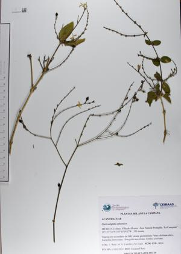
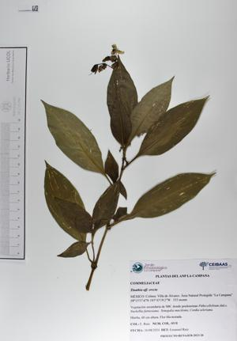
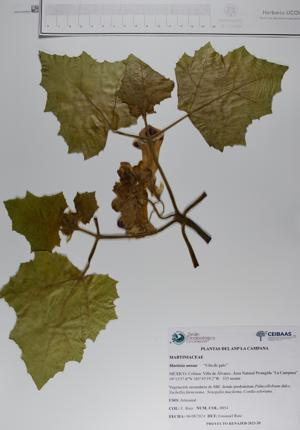
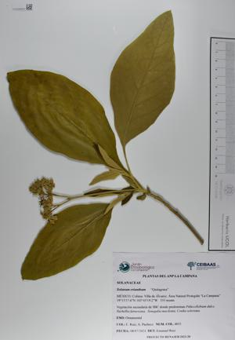

Herbario Digital
Bienvenidos a nuestro herbario digital, un espacio creado para preservar, compartir y explorar la riqueza de nuestra flora. Aquí encontrarás una colección detallada de especies botánicas, con descripciones e imágenes que facilitan su estudio y apreciación..

Acanthaceae
Carlowrightia arizonica
Amaranthaceae
Amaranthus hybridus
Quelite
Amaranthaceae
Amaranthus spinosus
Quelite espinoso
Amaranthaceae
Iresine sp.
Arlome
Annonaceae
Annona reticulata
Anona
Apocynaceae
Rauvolfia tetraphylla
Sarna de perro
Apocynaceae
Ruehssia lanata
Bejuco peludo
Aristolochiaceae
Aristolochia taliscana
Guaco
Asteraceae
Melampodium divaricatum
Boraginaceae
Cordia salvadorensis
Tambor
Cannabaceae
Celtis iguanaea
Granjeno
Commelinaceae
Commelina sp.
Patito

Commelinaceae
Tinatia erecta
Euphorbiaceae
Acalypha sp. (1)
Euphorbiaceae
Acalypha sp. (2)
Euphorbiaceae
Croton suberosus
Dominguilla
Euphorbiaceae
Sapium macrocarpum
Higuerilla brava
Fabaceae
Mimosa albida
Sierrilla
Fabaceae
Phaseolus lunatus
Frijol de ratón
Fabaceae
Senna hirsuta
Fabaceae
Vachellia campechiana
Espino blanco
Fabaceae
Vachellia farnesiana
Huizache negro
Hernandiaceae
Gyrocarpus jatrophifolius
Rabelero
Loranthaceae
Malojo
Lythraceae
Cuphea sp.
Malvaceae
Abutilon sp.
Acapán

Martyniaceae
Martynia annua
Uña de gato
Moraceae
Ficus insipida
Higuera
Moraceae
Ficus pertusa
Camichín
Nyctaginaceae
Pisonia aculeata
Garabato
Nyctaginaceae
Pisonia capitata
Garabato
Nyctaginaceae
Salpianthus arenarius
Hierba del coyote

Nyctaginaceae
Salpianthus purpurascens
Hierba del coyote
Phyllantaceae
Plumbaginaceae
Plumbago zeylanica
Chichinola
Poaceae
Lasiacis ruscifolia
Carricillo
Polemoniaceae
Loeselia involucrata
Polygonaceae
Coccoloba barbadensis
Cahuite
Rubiaceae
Hintonia latiflora
Campanillo
Santalaceae
Muérdago
Sapindaceae
Paullinia tomentosa
Guamúchil cimarrón
Sapotaceae
Sideroxylon cartilagineum
Huizilacate
Solanaceae
Jaltomata procumbens
Pisecua
Solanaceae
Solanum lycopersicum
Chaltomate
Solanaceae
Physalis sp.
Tomatillo

Solanaceae
Solanum erianthum
Quitagrasa
Solanaceae
Solanum houstonii
Sandillitas
Urticaceae
Urera sp.
Quemadora
Verbenaceae
Citharexylon affine
Velo de novia